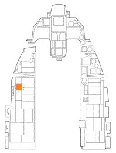
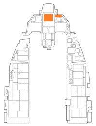
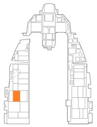
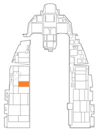
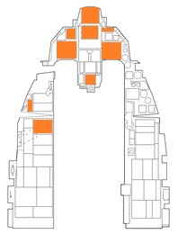

コールドスタート#
Cold Start: コールドスタート#
コールド＆ダーク状態の航空機を始動するには2通りの方法があります。 1つは [Left Win + Home] で行うオートスタートです。 航空機があなたのために自動で起動します。 [Left Win + End] を押すと、オートスタートが停止します。
DCS のタイトルが示すように手動で航空機を起動するような精巧に作り込まれたシステムモデリングを使えるようになれば F-16 は輝きを放つでしょう。
※ テスト項目などを除いたゲーム的に必要な手順はタイトルを太字で示しています。
1. MAIN PWR スイッチを BATT に#
- ELEC パネルの FLCS RLY ライトが点灯しているのを確認
バッテリーから供給できる電力量は限られているため、MAIN PWR スイッチを5分以上 BATT もしくは MAIN PWR にしたままにしてはいけません。 5分以上必要なときは、エンジンを始動するか外部電源を利用します。
2. FLCS PWR TEST スイッチを TEST で保持#
- ELEC パネルの以下のライトを確認
- FLCS PMG ライト点灯
- TO FLCS ライト点灯
- FLCS RLY ライト消灯
- TEST パネルの FLCS PWR ライトの ABCD が点灯しているのを確認
このテストは、操縦系統コンピュータがバッテリーから正常に電力を供給されているか確認するためのものです。
3. FLCS PWR TEST スイッチを離す#
4. MAIN PWR スイッチを MAIN PWR に#
以下のライトが点灯しているのを確認します。
- ENGINE (右 Eyebrow)
- HYD/OIL PRESS (右 Eyebrow)
- ELEC SYS (Caution ライト)
- SEC (Caution ライト)
- FLCS RLY (ELEC パネル)
5. EPU GEN ライトと EPU PMG ライトの消灯を確認#
どちらかのライトが点灯している場合は、EPU 起動条件を満たしています。 地上整備員が EPU の安全ピンを抜くと、EPU が起動して危険な状態になります。
ライトが点灯している場合は、MAIN PWR スイッチを OFF にして始動を中断します。(ミッションをリスタートする)
6. JSF スイッチを START 2 に#
JSF RUN ライトが JSF 起動後 30 秒以内に点灯します。 エンジン RPM が増加し始めるはずです。
JSF スイッチをどちらに倒しても電力は FLCS に送られます。 するとFLCS RLY ライトが消灯し、FLCS PMG ライトと ACFT BATT の TO FLCS ライトが点灯するはずです。
※ この時点で通信を確立してきます。 キャノピーの開閉は任意です。
7. SEC 警告灯の消灯#
RPM 20 % になったら SEC が消灯します。
8. RPM 20 % になったら、スロットルを IDLE に#

キーコマンド: RShift + Home
エンジン回転数が 20 % に達したら、スロットルを IDLE 位置まで前進させます。
右 Eyebrow の ENGINE ライトが 10 秒以内に消灯し、RPM と タービンファン内部温度 (FTIT) が上昇するはずです。 予備発電機が作動するまではRPM 計と FTIT 計しか機能しません。
9. ENGINE 警報灯の消灯#
RPM が 60 % に達すると予備発電機が始動します。 すると ENGINE 警報灯が消灯します。
予備発電機が起動して 5~10 秒経過すると主発電機が稼働して、代わりに予備発電機が停止します。
主発電機が始動する前に SEAT NOT ARMED 警告灯と左補助コンソールの WHEELS DOWN ライトが点灯しているのを確認し、エマージェンシーバス (非常用経路) が予備発電機によって給電されていることを確認します。
10. JSF スイッチが OFF 位置にあるのを確認#

RPM 55 % で JSF スイッチが自動で OFF になるはずです。 自動でならなかった場合は手動で OFF にします。
11. エンジン計器類の確認#
エンジンが正常に起動した場合
- HYD/OIL PRESS 警報灯が消灯する
- FUEL FLOW (燃料流量) が 700~1700 pph を示す
- OIL PRESS (油圧計) が最低 15 PSI を示す
- NOZ POZ (ノズル位置) 計が 94 % 以上になる
- RPM 62~80 % になる
- FTIT 650 ℃ 以下を示す
- HYD PRESS A & B (油圧計 A、B) が 2,850~3,250 PSI を示す
12. PROBE HEAT の確認#
- PROBE HEAT スイッチを PROBE HEAT に
- PROBE HEAT 警告灯の消灯を確認します。
- もし点灯していれば、1つ以上のプローブヒーターが非稼働か、検知システムが故障しています。
-
PROBE HEAT スイッチを TEST に
- PROBE HEAT 警告灯が、1秒間に3~5回点滅します。
- 点滅しない場合は、PROBE HEAT の検知システムが非稼働です。
-
PROBE HEAT スイッチを OFF に
13. FIRE & OHEAT DETECT ボタンを押す#
ボタンを押している間、ENG FIRE 警報灯と OVERHEAT 警告灯が点灯しているのを確認します。 これにより火災/過熱検知が繰り返しテストされます。
14. MAL & IND LTS ボタンを押す#

ボタンを押している間、コックピットのすべての警報、警告、指示灯が点灯します。
音声メッセージシステム (VMS) の音声警報が流れます。 WARNING と CAUTION の音声の前に、ランディングギアの短い警報音が鳴るはずです。
15. アビオニクス電源パネルの設定#

- MMC スイッチを MMC に
- ST STA スイッチを ST STA に
- MFD スイッチを MFD に
- UFC スイッチを UFC に
- GPS スイッチを GPS に
- DL スイッチを DL に
- MIDS LVT ノブを ON に
これらのスイッチで航空機に搭載された電子機器の電源を入れ、BIT テストを開始します。
16A か 16B のどちらか一方を行ってください#
16 A-1. EGI/INS ノブを ALIGN NORM に#
ALIGN NORM にすると、EGI/INS のリングレーザージャイロナビゲーションシステムのアライン、すなわち調整が開始されます。 通常のアラインの場合は完了するのに8分を要しますが、航空機が前回のシャットダウン位置から動いていない場合は STOR HDG を使って、より短い時間で完了できます。
地上滑走前にはこのノブを NAV にします。
16 A-2. ICP で DED の座標を確定#

ALIGN NORM の場合は、ノブを ALIGN NORM にしてから2分以内に、ICP を使用して DED に表示された緯度と経度を確定します。 データコントロールスイッチ (DCS) を使用して緯度、経度をそれぞれ選択し、ENTR ボタンを押して確定します。
NORM では、DED の INS RDY が点滅すればアライン完了ですが、フルアラインにはアラインアラインメントステータスの数値が 6 以下になる必要があります。
16 B. EGI/INS ノブを STOR HDG に (Oprional)#
DCS の世界の F-16 は、いつでもストアヘディングアラインが使えます。 この場合、前回のシャットダウン位置を基準にアラインが行われます。 STOR HDG であれば、DED で座標を確定する必要はありません。 フルアラインはステータスが 10 以下になれば完了します。
17. SNSR PWR パネルの設定#
- LEFT HDPT スイッチを OFF に
- RIGHT HDPT スイッチは任意
- FCR スイッチを FCR に
- RDR ALT スイッチを RDR ALT に
照準ポッドを装備していれば RIGHT HDPT をオンにします。
FCR (火器管制レーダー) とレーダー高度計は、航空機が離陸するまで電波を放出しません。 必要に応じて、これらの装置の有効化は離陸直前まで行わない場合があります。
18. HUD 制御パネルを任意に設定#
HUD に表示したい内容を自由に選択します。
詳細は HUD を参照してください。
19. C&I ノブを UFC に#

これにより、UFC を使って CNI (通信・航法・識別) の機能を設定できるようになります。
20. エンジンセカンダリモードの確認#
- ENG CONT スイッチを SEC に
- SEC 警告灯が点灯
- RPM が安定 RPM は、安定する前には ENG CONT スイッチが PRI のときより最大 10 % 低下する場合がある SEC にして安定化すれば、PRI のときより最大 5 % の低下になる
- スロットルをすばやくミリタリー推力にしてからアイドルに戻します。その間に、RPM が 85 % に達するのを確認します。
- SEC にしてから30秒以内に NOZ POZ が 10 % 以下になる
- ENG CONT スイッチを PRI に戻す
- SEC 警告灯の消灯を確認
- NOZ POZ が 94 % 以上に
この手順はセカンダリエンジンコントロール (SEC) モードの動作確認です。 このモードは、エンジンへの燃料流量を調節するデジタルコンピュータが故障した場合に使用します。
※ 操縦系統を動かして正常に動作するのを確認します。
21. FCLS BIT の開始と確認#
- 操縦桿を回す FLCS BIT を行う前の準備として行い、操縦桿の最大入力により油圧作動油を温めて気泡を除去します。
- BIT スイッチを BIT に FCL CONTROL パネルの RUN ライトが点灯します。 約45秒間の自己診断テストが完了すると RUN ライトが消えて BIT スイッチが OFF 位置に戻ります。 また、FAIL ライトと FLCS 警報灯も点くことはありません。 MFD の FLCS ページには BIT 完了メッセージが表示されます。
FLCS BIT が行われている間に次の項目へ進む.
22. ECM パネルを必要に応じて設定#

現在の DCS バージョンでは機能しません。
23. スピードブレーキスイッチを展開して格納#

スピードブレーキが正常に動作するか確認します。 スピードブレーキと左補助コンソールの SPEED BRAKE ポジションインジケーターを目視で確認します。
24. WHEEL DOWN ライト3つが緑色に点灯しているのを確認#

3つのライトが点灯していれば、ランディングギアは正常に展開、ロックされています。
25. SAI の調節#
ノブを引いて回して、SAI (予備姿勢指示器) のロックを解除します。
26. FUEL QTY SEL ノブの確認#
- TEST 位置: FR、AL ポインターが 2,000 (± 100) ポンドを指し、トータライザーが 6,000 (± 100) ポンドを指します。FWD FUEL LOW 警告灯と AFT FUEL LOW 警告灯が点灯します。
- NORM 位置: AL ポインターが約 2,810 ポンドを指し、FR ポインターが約 3,250 ポンドを指します。
- RSVR 位置: 両方の針がリザーバーに約 480 ポンドの燃料が入っていることを示します。
- INT WING 位置: 両方の針が主翼内に約 550 ポンドの燃料が入っていることを示します。
- EXT WING 位置: 翼下の外部燃料タンクに燃料が満載されていれば、両方の針が約 2,470 ポンドを指します。
- EXT CTR 位置: 胴体下の外部燃料タンクに燃料が満載されていれば、FR ポインターが約 1800/1890 ポンドを指します。 AL ポインターは 0 を指します。
- FUEL QTY SEL ノブを任意の位置に
27. EPU 燃料量が 95-102 % であることを確認#
EPU に用いるヒドラジンの残量を確認します。
28. アビオニクスの確認#
SMS、通信、ステアポイント、ビンゴ燃料を含むプロファイル、MFD マスターモードデータ、MFD、VHF 無線を任意の設定にします。
29. DBU の確認#
※ FLCS BITが完了してから行います。
- DIGITAL BACKUP スイッチを BACKUP に: DBU ON 警報灯の点灯を確認します。
- 操縦桿を動かす: すべての動翼が通常通り動くのを確認します。
- DIGITAL BACKUP スイッチを OFF に: DBU ON 警報灯の消灯を確認します。
これはデジタルバックアップソフトウェアの動作確認です。 DBU は FLCS ソフトウェアに問題が発生したときに使います。
30. Trim の確認#
- TRIM/AP DISC スイッチを DISC に
- 操縦桿のトリムボタンを動かしてロールとピッチを操作します。
- 動翼が動かないのを確認します。
- パネルのトリムホイールとインジケーターが動かないのを確認します。
- TRIM/AP DISC スイッチを NORM に
- 操縦桿のトリムボタンを中央位置に戻す.
- 動翼が動くのを確認します。
- パネルのトリムホイールとインジケーターが動くのを確認します。
- ラダートリムを確認
- YAW TRIM ノブが中央にあることを確認します。
30. Manual Pitch Override (MPO) の確認#
- 水平尾翼が互い違いにならないように注意しながら、操縦桿を前いっぱいに倒して保持します。
- MPO スイッチを OVRD にして保持します。水平尾翼の後端がさらに下がることを確認します。
- 操縦桿と MPO スイッチを離します。水平尾翼が元の位置に戻るのを確認します。
※ 操縦系統を動かして正常に動作するのを確認します。 必要であればこの時点で給油口の開閉チェックを行います。
31. EPU の確認#
- OXYGEN パネルの Diluter レバーを 100 % に
- スロットルを動かして、エンジン RPM をアイドル時より 10 % 上げる.
- EPU/GEN TEST スイッチを EPU/GEN 位置で保持して以下のライトを確認
- EPU AIR ライト点灯
- EPU GEN ライトと EPU PMG ライト消灯
- FLCS PWR ライト点灯
- EPU RUN ライトが最低5秒間点灯
- EPU/GEN TEST スイッチを OFF に
- スロットルをアイドル位置に戻す.
- OXYGEN パネルの Diluter レバーを NORM に戻す
これは非常時に EPU の電力が正しく供給できるかの動作確認です。 必要に応じて、離陸直前に行うこともあります。
32. アビオニクスを任意に調整#

INS のアラインが完了するまでの時間を利用して、ミッション遂行のためのシステムチェックを行います。 兵装管理システム (SMS) のプロファイル、無線周波数とチャンネル、航法用データ、帰投燃料 (BINGO) 設定、低高度警報 (ALOW) 設定、HUD や RWR の電源を含む様々なシステム確認が含まれます。
Taxi: タキシング#
あなたが F-16 を自分で始動したかどうかに関わらず、次は滑走路にタキシングすることになります。
前進準備が整ったら [PAGE UP] もしくは [Num+] でスロットルをゆっくりと上げ、[Z] と [X]でラダーペダルを調整します。 スロットルを下げるには [PAGE DOWN] か [Num-] を押します。 [W] を押すとホイールブレーキが掛かります。
1. キャノピーを閉める#
キーコマンド: [LCtrl + C]
黄色のキャノピーハンドルも閉めます。
2. 高度計の確認#

HUD に表示された高度と高度計の数値が一致しているか確認します。
高度計の ELEC と PNEU の2つのモードのそれぞれの数値の差が ±75 フィートかつ、実際の高度の ±75 フィートであることも確かめます。
3. 外部灯火を任意に設定#

4. EGI/INS ノブを NAV に#
DED の INS ページの RDY 、もしくはフルアラインを待つならば HUD の ALIGN の文字が点滅したことを確認してからノブを回す.
詳細は INS Alingment を参照してください。
5. NWS を有効化#

操縦桿の NWS/AR DISC ボタンを押します。 有効であれば HUD 横の AR/NWS 指示器の NWS が点灯するはずです。
6. スロットルを前進#
スロットルをアイドル位置からわずかに前進させて機体を動かし始めます。 目標速度に達したらアイドル位置に戻します。
7. ブレーキと NWS を確認#
機体が前進し始めたらすぐにパーキングブレーキと NWS の動作確認を行います。 パーキングブレーキが掛かる時間が長いとすぐに発熱してしまうため、タキシング速度から掛けてはいけません。 まずペダルブレーキで航空機を減速させてから、パーキングブレーキを使用します。
8. 機体前方と計器の確認#

前進のための機体前方の確認と、飛行に関する計器が正しく動いているか確認します。